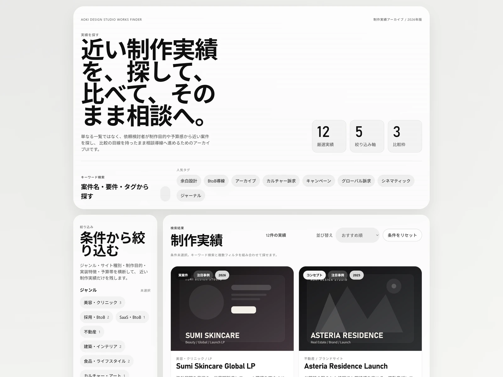
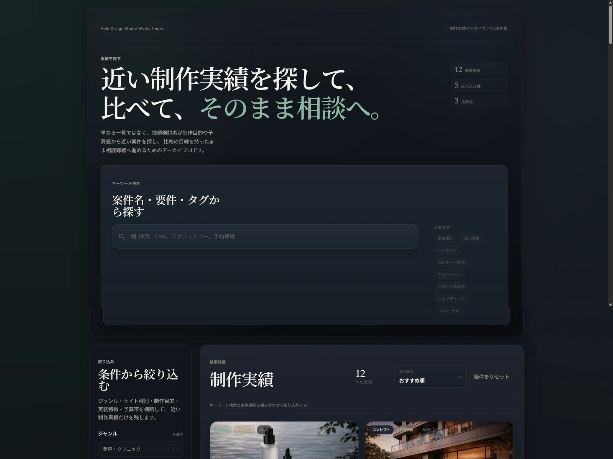
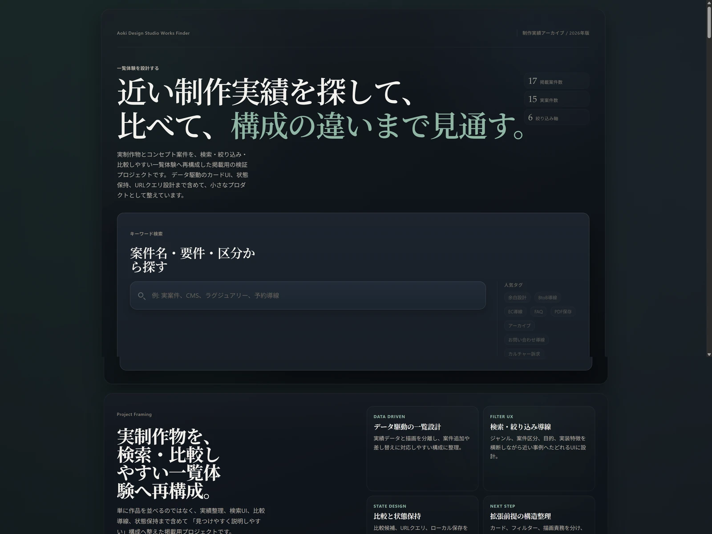

01
一覧が単調に見えやすい
カードが並ぶだけでは、案件ごとの違いや比較の観点が伝わりにくくなります。
検索・比較・相談をひと続きにする
Aoki Design Studio Works Finder は、掲載作品をただ並べるのではなく、 近い案件を探し、比べ、判断材料を残すところまでを設計した掲載用アーカイブUIです。
Background
単なる作品一覧は、掲載数が増えるほど差分が埋もれやすく、近い案件を探す前に離脱されやすくなります。 Works Finder では、一覧を見せること自体ではなく、近い案件を探しやすくすることを出発点にしました。
そこに比較と相談までの導線をつなぎ、閲覧後の判断材料も残せる形へ整理しています。 実装は Vanilla JS のままですが、状態・URL・描画・保存の責務を分け、今後の拡張で崩れにくい構成を意識しました。
設計時に意識したこと
Problem Setting
一覧として見せるだけでは弱くなりやすい点を、探索体験として捉え直しています。
01
カードが並ぶだけでは、案件ごとの違いや比較の観点が伝わりにくくなります。
02
作品数が増えるほど、近い条件の案件へたどるまでの負荷が上がります。
03
気になる案件を見つけても、その先の比較と相談準備が別体験になりがちです。
04
検索・絞り込み・比較が別機能に見えないよう、ひとつの探索フローとして整える必要がありました。
Solution
Search
案件名・要件・特徴語から、近い事例へ短く到達できる入口を用意しています。
Filter
ジャンル、案件区分、制作目的、機能などを掛け合わせて探索の粒度を調整できます。
Sort
おすすめ順、新着順、予算帯順を切り替え、一覧の見え方を素早く変えられるようにしています。
Compare
候補を保持したまま、制作条件や目的の差分を横並びで見比べられるようにしています。
Modal
一覧から離れすぎず、各案件の要点を深掘りできる詳細表示を用意しています。
URL State
検索条件や比較状態をURLに反映し、再訪や共有で状態を再現しやすくしています。
Storage
保存候補はブラウザに保持し、短い検討メモとして使い続けられるようにしています。
Consultation
比較結果や条件をメモ化し、相談前の整理までを一覧体験の終点としてつないでいます。
UI Intent
Hero + Search
世界観と探索入口を離しすぎず、最初の一手を迷わせない導線にしています。
Project Intro
project intro で「何を見せるアーカイブか」を先に共有し、一覧の読み方を揃えています。
Explore Layout
条件調整と結果確認を分離し、探索の往復がしやすいレイアウトにしています。
Compare to CTA
最後に比較内容をメモへ落とし込み、閲覧だけで終わらない締め方を用意しています。
Implementation
React へ移る前段階として、Vanilla JS でも責務を分けた構成にしています。
state.js
検索条件、比較候補、保存状態、モーダル開閉などのUI状態を正規化します。
filter.js
検索・絞り込み・並び替えのロジックをまとめ、一覧結果を導出します。
render.js
カード、比較バー、モーダル、CTA など、各表示のHTML更新を担当します。
main.js
初期化、イベントハンドリング、状態更新の起点として画面全体を接続します。
urlState.js
検索条件や比較状態をクエリへ読み書きし、状態共有を支えます。
storage.js
保存候補の localStorage 永続化を小さく切り出し、失敗時もUIを壊さないようにしています。
consultation.js
比較候補や条件から、メモ文と相談用URLを組み立てます。
siteConfig.js
相談先URLや付随クエリなど、後で差し替えうる設定値を独立させています。
data/works.js
掲載作品の情報、featured、サムネイル参照をまとめ、描画側と分離しています。
Evolution
見た目を整えるだけでなく、一覧としての役割を少しずつ明確にしてきました。

明るいベースの初期UIで、検索・一覧・比較の骨格をまず提示した段階です。

ダークトーンと写真サムネイルを導入し、アーカイブとしての世界観を強めました。

作品数の拡張と intro セクション追加により、単なる一覧ではなくアーカイブとしての文脈を補強しました。
コピー、構成、CTA を整理し、検索後に比較して判断軸を残す価値を見えやすくしました。
現在版では、掲載作品の選別、メタ情報、モバイル表示、公開整備までを含めて、 GitHub Pages で共有できる状態へ整えています。
実績数や成果の誇張ではなく、どう探し、どう比べ、どう説明するかを整理した公開版として位置づけています。
Next Step
次の段階では、Works Finder と同じ要件を React + TypeScript で再構築する予定です。 UI の印象は大きく崩さず、状態管理や描画責務をより明確にした構成へ移していきます。
Planned Rebuild
まずは現在版の探索体験と比較価値を保ったまま、React + TypeScript で同一要件を再実装し、 UI と実装構造の両方を説明しやすい状態へ発展させる計画です。